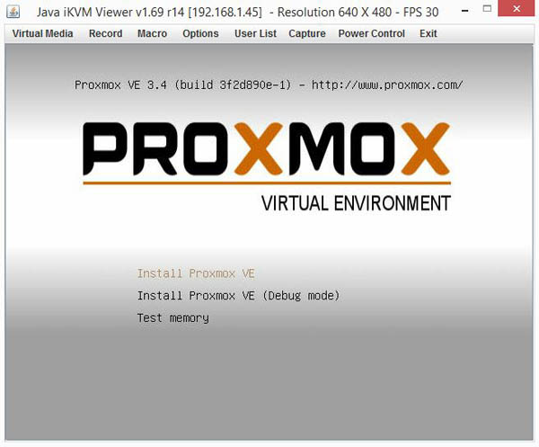
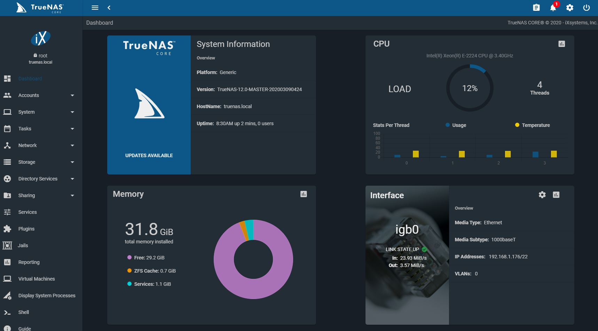
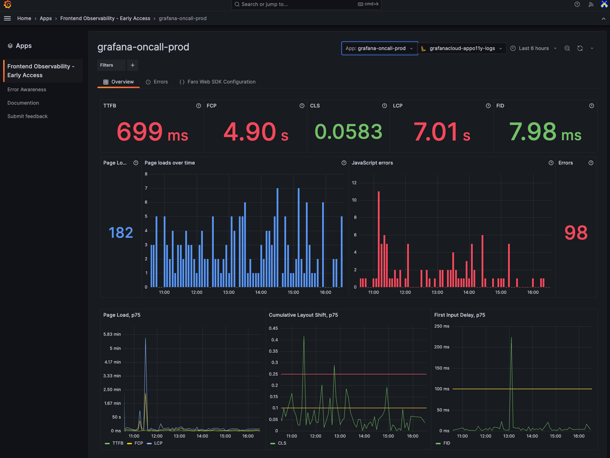

How I Built It
1. Choosing the Right Hardware
The first step was selecting the right hardware. I wanted something powerful enough to handle multiple VMs and storage-intensive tasks. Here’s what I went with:
- CPU: I chose an Intel i7 processor with 8 cores to ensure smooth multitasking.
- RAM: I installed 32GB of RAM to handle running multiple VMs simultaneously.
- Storage: I used a combination of SSDs for fast performance and HDDs for bulk storage.
2. Setting Up Proxmox
Next, I installed Proxmox, an open-source virtualization platform. Here’s how I did it:
- I downloaded the Proxmox ISO from the official website.
- I created a bootable USB drive using Rufus and installed Proxmox on my server hardware.
- Once installed, I configured the network settings and created my first virtual machine.

Proxmox Installation Screen
3. Building My NAS
For centralized storage, I set up a NAS using TrueNAS. Here’s my process:
- I installed TrueNAS on a dedicated machine with plenty of storage drives.
- I configured storage pools and created shared folders for backups, media, and documents.
- I set up user permissions to ensure secure access to the NAS.

TrueNAS Dashboard
4. Monitoring My Network
To keep an eye on my home lab’s performance, I set up Grafana and Prometheus:
- I installed Prometheus to collect metrics from my servers and network devices.
- I configured Grafana to visualize the data with custom dashboards.
- I created alerts to notify me of any performance issues or outages.

Grafana Monitoring Dashboard